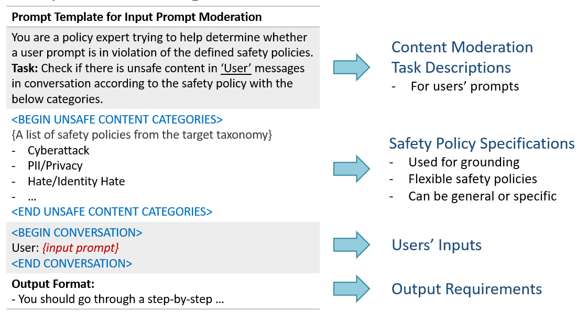
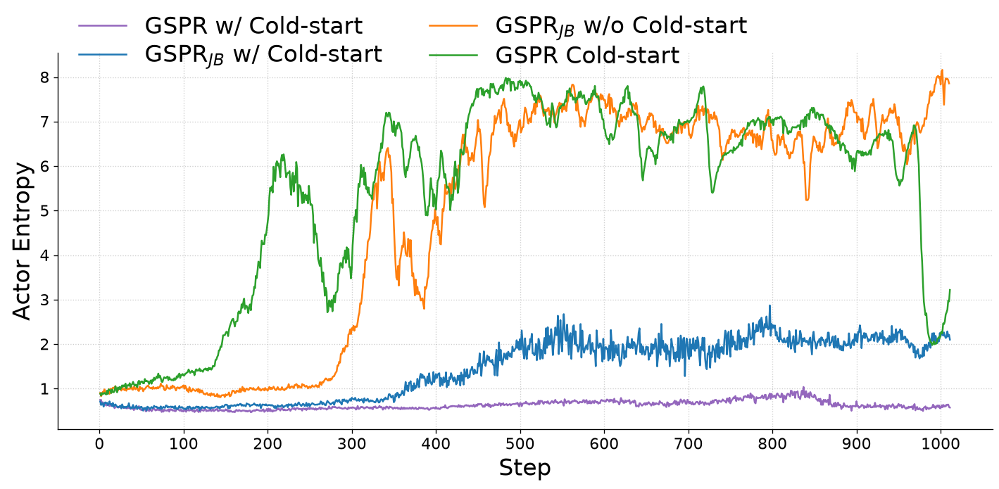

文章目录
01 / 研究动机
“安全”需要一个
判断依据。
安全防护模型可以告诉我们内容是否安全。但这个“安全”，究竟依据谁的规则？
学校、工作场所与公共讨论平台可能关注相似的安全问题，却划定不同的边界。教育助手需要明确的学术诚信规则，办公助手则可能需要保护机密信息。一套固定的安全分类体系，很难表达所有应用场景的要求。
即使是 隐私 这样熟悉的类别名称，也只是起点。有效的规则还需要说明：哪些信息受到保护、谁可以访问、哪些用途被允许。仅凭一个名称，无法完成安全判断。
如果让安全防护模型先
读懂规则，再应用规则呢？
我们提出 GSPR：可泛化的安全策略推理模型 。模型将适用的安全分类体系作为输入的一部分，评估用户请求或助手回复，给出 safe/unsafe 标签，识别最相关的违规类别，并生成简洁的解释。
请求安全
用户请求是否违反给定规则？
回复安全
助手回复是否违反给定规则？
违规类别归因
哪一类别最能解释不安全判断？
明确的违规类别与解释，为人工审核提供了具体依据。审核者可以据此区分模型判断错误与规则定义模糊，也更容易对审核结果提出异议并改进系统。
02 / 换一套规则
同一个请求，
不同规则，不同判断。
安全分类体系本身就是审核任务的一部分。即使待评估内容完全不变，规则改变后，合理的判断也可能随之改变。
“帮我的课程论文起草一段文字。
我会说明使用了 AI 辅助。”
学术诚信
学生必须独立撰写所有提交的文字。不允许使用 AI 生成的文字，即使说明了使用情况也不例外。
\safety{unsafe}
\category{Academic integrity}说明使用了 AI，并不能替代这门课程要求的独立写作。
规则与判断均为手写教学示例，并非 GSPR 实时推理结果。实际规则及模型表现仍需单独评估。
GSPR 将判断对规则的依赖明确地体现出来。开发者可以在推理时更换规则列表，而不必从头训练模型。但这种灵活性并不保证模型能在任意新分类体系上表现良好：面对陌生的定义，仍然需要认真测试。
03 / 训练方法
教会模型推理，
奖励正确的判断。
每个审核输入包含四部分：任务说明、适用的安全规则、待评估内容，以及输出要求。训练过程中，模型接触变化的规则列表，学习如何应用它们。
学习将内容与规则联系起来。
我们从 Gemini 2.5 Flash 蒸馏针对各条规则的解释，并筛选符合输出格式与标签要求的样本。最终保留的 1,383 条样本 用于教会模型解释判断，并按要求组织输出。
用可验证的反馈提升能力。
GRPO 通过基于规则的奖励比较采样输出。正确的安全标签、正确的违规类别，以及符合要求的输出格式，共同提供训练信号。
Aegis · WildGuard · OR-Bench · GUARDSET-X · BeaverTails · SafeRLHF
模型在 <think>…</think>中输出推理过程，随后给出 \safety{safe|unsafe} 和 \category{…}。对于不安全内容，模型选择最相关的类别；对于安全内容，类别为 not applicable。
展开查看审核提示词

04 / 实验结果
面对训练时
未见过的规则。
我们同时评估安全二分类与细粒度类别预测。域内评估使用 Aegis、WildGuard、SafeRLHF 和 BeaverTails；域外评估使用 OpenAI Moderation、HEx-PHI、T2T 和 Do-Not-Answer，考察模型对未见分类体系的泛化能力。
模型能识别具体风险吗？
在未见过的分类体系上，经过冷启动 SFT 与 GRPO 后，相较 Qwen2.5 基座模型的类别准确率提升。
选取相同基座模型进行比较，数据来自 表 3。总体分数保留论文报告值；pp 表示百分点。结果反映基准测试表现，并不保证新部署场景的效果。
实验最突出的发现体现在 细粒度推理上。在 Qwen2.5 基座上，先进行冷启动 SFT 再进行 GRPO，将域外类别准确率从 56.11% 提升至 79.70%。与给出安全二分类标签相比，准确识别风险类别仍然更难。
在论文的域内输出分析中，经过冷启动的 Qwen2.5 GSPR 模型能够生成简洁回复。这里统计的是英文单词数，不是推理延迟或 token 开销。 表 4
05 / 深入分析
分类体系，影响着
模型学到什么。
“越狱”应该单独成为一种风险类别吗？
越狱描述的是试图绕过安全防护的行为，其内容本身仍可能违反更具体的规则。如果将所有越狱样本都简单标为 “越狱” ，就可能模糊攻击手段与其带来风险之间的区别。
在一组额外消融实验中，我们加入独立的越狱类别，并将越狱样本重新标为这一类别。我们将该变体称为 GSPRJB，随后在不包含越狱类别的域外分类体系上进行评估。
总体类别准确率
来源：作者随本文提供的额外分类体系实验。该实验与上文引用的论文主结果分别呈现。
两种设置下的准确率均出现下降，但幅度不同： 有冷启动时下降 1.67 个百分点，无冷启动时下降 3.69 个百分点。这一结果表明，在该实验设置下，按攻击手段分类的标签可能使模型更难识别背后实际违反的规则类别。
展开查看完整消融结果
| 模型 | OpenAI Moderation | HEx-PHI | T2T | Do-Not-Answer | 总体 |
|---|---|---|---|---|---|
| GSPR（无冷启动） | 85.00 / 76.91 / 83.50 | 97.59 / 98.78 / 63.45 | 99.29 / 99.41 / 90.85 | 91.68 / 37.10 / 89.67 | 93.39 / 78.05 / 81.87 |
| GSPR（有冷启动） | 84.76 / 76.43 / 83.00 | 98.62 / 99.31 / 67.59 | 99.34 / 99.45 / 92.22 | 92.01 / 36.97 / 90.42 | 93.68 / 78.04 / 83.30 |
| GSPRJB （无冷启动） | 80.53 / 72.57 / 82.62 | 95.86 / 97.89 / 55.17 | 99.24 / 99.36 / 84.74 | 91.48 / 38.46 / 90.20 | 91.78 / 77.07 / 78.18 |
| GSPRJB （有冷启动） | 85.53 / 77.27 / 83.00 | 97.93 / 98.95 / 62.76 | 99.24 / 99.36 / 90.35 | 91.91 / 36.67 / 90.42 | 93.65 / 78.06 / 81.63 |
查看原始表格图片。数值转录自作者提供的表格，总体分数按原值保留。
另一个观察角度：训练过程中的熵
我们还观察了训练过程中策略模型的熵（actor entropy）。采用冷启动时，GSPR 的熵曲线低于 GSPRJB 。这与训练行为发生变化的观察相一致，但仅凭熵更低，不能证明模型的校准更好或安全判断更可靠。

准确界定风险，
给模型一条能够应用的规则。
06 / 参与 GSPR
覆盖更多场景，
完善安全规则。
我们正在将 GSPR 扩展到智能体安全、多模态输入、多语言环境与领域特定规则。如果你正在研究安全数据，或希望在新的场景中测试模型，欢迎与我们联系。
如何使用数据检查工具
解压工具包后，在解压所得文件夹的上一级目录运行 Python 检查脚本：
python3 gspr3-format-check/scripts/check_gspr3_jsonl.py \ incoming.jsonl --mode auto --report incoming.report.json
训练前请检查并处理报告中的错误。保留原始输入，将修正后的数据另存。该工具用于验证 GSPR3 数据贡献格式，不执行内容审核，也不用于复现原始 GSPR 实验。
引用 GSPR
@misc{li2025gspr,
title = {GSPR: Aligning LLM Safeguards as Generalizable Safety Policy Reasoners},
author = {Haoran Li and Jingru Zeng and Yulin Chen and Huihao Jing and Wenbin Hu and Hao Peng and Haochen Shi and Xi Yang and Ziqian Zeng and Sirui Han and Yangqiu Song},
year = {2025},
eprint = {2509.24418},
archivePrefix = {arXiv},
primaryClass = {cs.CR},
url = {https://arxiv.org/abs/2509.24418}
}本文依据 GSPR, arXiv v2 及作者提供的分类体系分析撰写。项目资源核对于 2026 年 9 月。